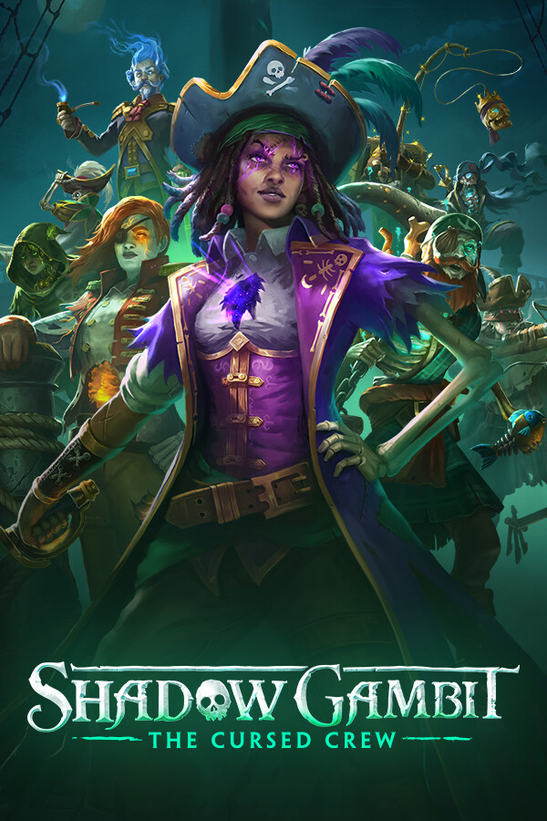

Shadow Gambit: The Cursed Crew Demo
Shadow Gambit: The Cursed Crew Demo
Details
|  | |
| Playtime | Not Played |
| Last Activity | Never |
| Added | 2023-08-11 0:29:07 |
| Modified | 2023-08-11 0:44:39 |
| Completion Status | Abandoned |
| Library | Steam |
| Source | Steam |
| Platform | PC (Windows) |
| Release Date | |
| Community Score | |
| Critic Score | |
| User Score | |
| Genre | |
| Developer | |
| Publisher | |
| Feature | |
| Links | |
| Tag | |
Description

Ahoy, cursed pirate!
This is Shadow Gambit: The Cursed Crew, an all-new stealth strategy game set during an alternate history of the Golden Age of Piracy.
The Curse of Lost Souls haunts the mysterious island chain known as the Lost Caribbean, which is under the control of the terrible forces of the Inquisition. They despise all that is supernatural and use soul devouring fire to hunt cursed pirates like you!


Pull-off an epic heist and salvage a mysterious treasure of otherworldly power to defy the army of the Inquisition. Infiltrate their fortresses. Sneak behind enemy lines. Cleverly combine the magical skills of your crew to take out a variety of enemies with carefully considered tactics. Feel like a brilliant mastermind when your plan clicks perfectly into place!


Embark on a journey with cursed pirate Afia and seek the legendary Black Pearls to revive a cursed crew of your own. Each of your eight shipmates is a playable character with an individual personality and armed with unique supernatural powers. Launch friend or foe with Gaëlle's magical cannon, use Mr. Mercury's soul anchor to open a magic portal or dash across spacetime for split second stealth attacks with Afia's mythical sword.


Join The Red Marley, a ghost ship with a living soul. On deck, plan your next adventure or just hang out with your crew mates while they enjoy their un-life. Get to know these legendary cursed pirates of the Lost Caribbean. With individual character missions find out about their backstories, learn who they are and what led them on their cursed journeys.


Freely select your crew members before embarking on each mission. Utilize their unique abilities to find new strategies against the forces of the Inquisition. Plot your own path to enter and exit each island, be stealthy or more head-on in your play style and use the environment to your advantage. It's your playground to experiment in!

Go ashore a variety of exotic islands in the Lost Caribbean. From locales oozing with cursed soul magic to tropical beaches and lively pirate shanty towns: Every island is a unique hand-crafted sandbox where adventures await.

The powerful time-manipulating magic of your ghost ship is yours to wield. Pause time to consider your strategic choices or queue up multiple character actions. Capture a memory of every passing moment, to instantly return to if things go south. Change your approach and tactics to discover own unique solutions to each moment in the game – in your own time!